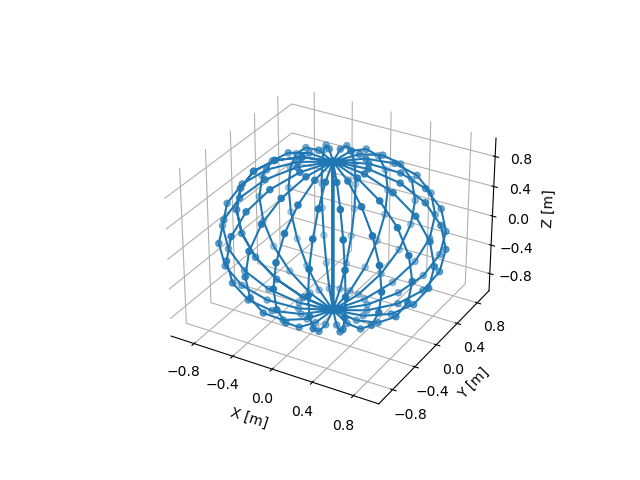

Note
Click here to download the full example code
Spherical Grid¶
Plot a grid in spherical coordinates with rho = 1 as Cartesian points. We can see that the Cartesian distances between points are not regular and there are many points that were converted to the same Cartesian point at the poles of the sphere.
import numpy as np
import matplotlib.pyplot as plt
import pytransform3d.coordinates as pc
from pytransform3d.plot_utils import make_3d_axis
thetas, phis = np.meshgrid(np.linspace(0, np.pi, 11),
np.linspace(-np.pi, np.pi, 21))
rhos = np.ones_like(thetas)
spherical_grid = np.column_stack((rhos.reshape(-1), thetas.reshape(-1), phis.reshape(-1)))
cartesian_grid = pc.cartesian_from_spherical(spherical_grid)
ax = make_3d_axis(ax_s=1, unit="m", n_ticks=6)
ax.scatter(cartesian_grid[:, 0], cartesian_grid[:, 1], cartesian_grid[:, 2])
ax.plot(cartesian_grid[:, 0], cartesian_grid[:, 1], cartesian_grid[:, 2])
plt.show()
Total running time of the script: ( 0 minutes 0.091 seconds)